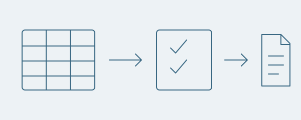
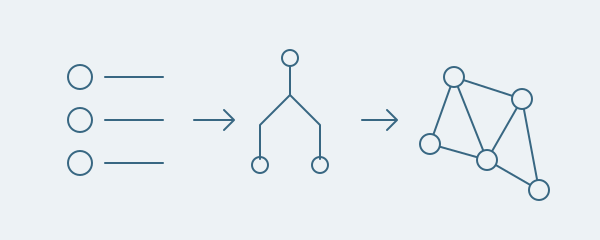
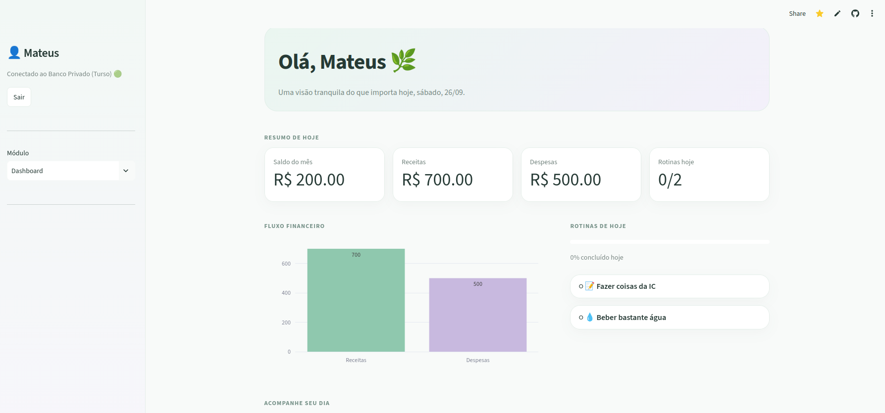

Automação de dados
Promoções para marketplaces
Cruza planilhas de produtos com bases de preços e exporta os valores das promoções por marketplace.
Estatística e Ciência de Dados · UFSCar
Iniciação científica · CNPq · PET Estatística
Sou estudante de Estatística e Ciência de Dados na Universidade Federal de São Carlos (UFSCar), com previsão de formatura em dezembro de 2028.
Faço parte do PET Estatística e desenvolvo uma iniciação científica com bolsa CNPq. Minha pesquisa em aprendizado de grafos genótipo-fenótipo é orientada pelo Prof. Thiago Rodrigo Ramos.
Tenho interesse em modelagem estatística, aprendizado de máquina e aprendizado de grafos. Trabalho principalmente com Python no desenvolvimento de ferramentas de análise de dados e rotinas de pesquisa.
CV em inglês · PDF

Automação de dados
Cruza planilhas de produtos com bases de preços e exporta os valores das promoções por marketplace.

Iniciação científica · Em andamento
Código de pesquisa para análise de dados genômicos, importância de variáveis e aprendizado de grafos com seleção de estabilidade.
Análise aplicada de dados
Reúne informações de anúncios, compara produtos e estima valores líquidos com as premissas de tarifas da aplicação.

Finanças pessoais
Organiza receitas, despesas e contas recorrentes com painéis interativos e banco de dados Turso.